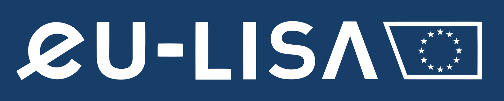

Eu-LisaDéveloppeur Web – Lead Tech
StrasbourgFreelance · Sur sitemars 2025 → Aujourd'hui

L’agence européenne pour les systèmes d’information à grande échelle, avait besoin de deux nouvelles applications web. Je les ai construites avec une bibliothèque de composants partagés et des outils internes, répartis sur plusieurs dépôts.
- Lead Tech d’une équipe de 8 développeurs et participation au recrutement
- Création de deux applications web pour des processus européens
- Création d’une bibliothèque de composants partagés et d’outils internes, publiés sur un registre Artifactory privé
- Structuration du code sur plusieurs dépôts, dont des monorepos en pnpm workspace pilotés par Turbo
- Définition de l’architecture et des standards, revue de code et accompagnement de l’équipe
- Impact : deux applications livrées, UX / UI unifiée par les bibliothèques partagées, couverture de tests unitaires et E2E